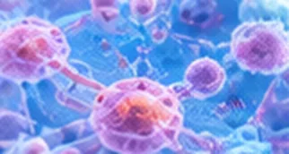
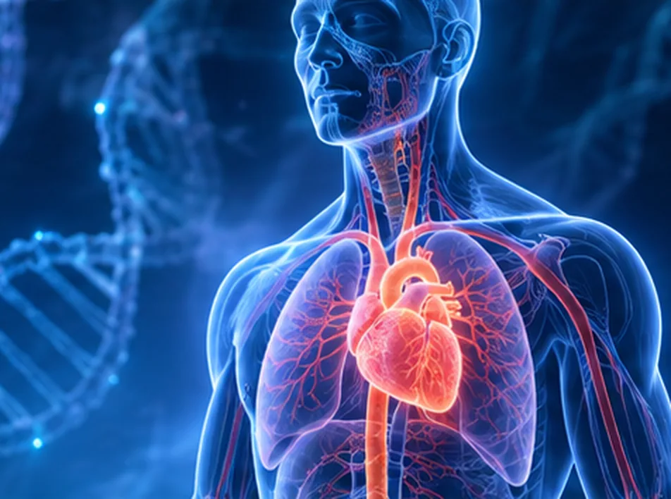
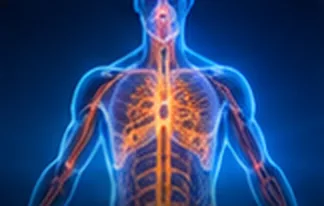
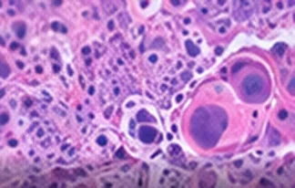
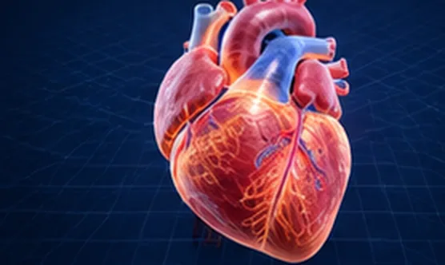

Latest systematic review
Open research search
Find the evidence behind any claim
Search real publications, see the exact query used, and open the original source.

Explore the latest research, understand complex medical concepts, and stay ahead in the world of healthcare.
Rate every feature, read honest reviews, get a verified badge and talk with fellow learners in real time. Every message is checked by an AI moderator.
START-KAIVYRA.bat se start karo. Ye apne aap connect ho jayega.
Human AnatomyStructure & Function BiochemistryMolecules & Reactions
PathologyDiseases & Mechanisms NeuroscienceBrain & Nervous System PharmacologyDrugs & Therapeutics
Search real publications, see the exact query used, and open the original source.
Papers are the newest matching records in Europe PMC. KAIVYRA does not review or endorse them. See the sources and disclaimer.

Live evidence pulse
Counts load straight from Europe PMC and ClinicalTrials.gov each time you open this page.
Indexed in PubMed via Europe PMC, last 11 years
Registered studies on ClinicalTrials.gov
The current year is partial and shown hatched. Registry entries are submitted by sponsors and are not verified by KAIVYRA. Counts show how much has been published, not whether a treatment works.
Stay updated with the newest research and health updates indexed from around the world.
Connecting to Europe PMC…
Official news sources: not connected yet. Topic 1 shows PubMed-indexed news items from Europe PMC until the news feed is set up.
Also read at the source: ICMR press releases MoHFW PIB health ministry releases WHO news
Items belong to their original publishers. ICMR and MoHFW publish no feed of their own, so their releases appear here only when the Press Information Bureau carries them. KAIVYRA shows headlines and short summaries with links only, and does not verify or endorse them, and no listed organisation is a partner of or endorses KAIVYRA. Other topics come from Europe PMC (PubMed-indexed records). A headline is not clinical advice. See a wrong or outdated item? Report it. Read the full disclaimer, sources and takedown policy.
Browse medicine
Each domain in the Research Domain Atlas opens topic pages with ready searches, trials and tools.
Comprehensive diagnosis, prevention and management of adult diseases.
Heart, blood vessels, circulation and cardiovascular disease.
Lungs, airways, breathing disorders and respiratory physiology.
Digestive system, liver, biliary tract and gastrointestinal disease.
Renal, urinary and genitourinary systems and their disorders.
Hormones, metabolism, diabetes and endocrine disorders.
Brain, spinal cord, peripheral nerves and neurological disease.
Mental health, behavior, cognition and psychological science.
Bones, joints, muscles, connective tissue and movement disorders.
Skin, hair, nails and dermatological science.
Vision, ophthalmology, ocular biology and eye disease.
Ear, nose, throat, airway and head-and-neck medicine.
The KAIVYRA platform
Find the literature, appraise it, synthesize it, apply it at the bedside, and keep what matters.
Search PubMed-indexed literature through Europe PMC. Filter by study type, year, open access and abstracts; open any paper for its record and save it.
LIVE DATAARetrieval-first answers: the exact query, numbered abstract excerpts and stated limitations. No invented text.
RETRIEVAL-BASEDECompare studies side by side and see why results may differ, with a non-scored appraisal checklist.
APPRAISAL AIDSCThirteen interactive modules including renal function, QTc and acid-base calculators, plus a clinical score suite and cardiac simulations.
13 MODULESTBrowse registered trials from ClinicalTrials.gov with status, phase and eligibility.
LIVE DATAKA research map of 50 domains and 519 topics, and a 15-lens inquiry framework.
50 DOMAINSLUpload a lab report photo or PDF and read it in plain language. OCR and analysis run in your browser, in English and Hindi.
EN / HIMDaily cases, campaigns and practice built into the platform, with progress stored locally.
PRACTICEInside the Knowledge Hub
The Atlas organizes medicine into 50 research domains and 519 topics across 9 groups. Every topic opens a page with eight ready searches, a trials search, an AI Lab brief and links to relevant tools. The Framework asks 15 questions of any subject (30 dimensions each, 450 in all), builds a literature query for every dimension, tracks your coverage and exports a plan as Markdown or CSV.
The taxonomy is curated by KAIVYRA. It is not MeSH and not an official classification, and it contains no clinical claims: it routes you to sources, it does not replace them.
| Module | Data source | Where it runs | Status |
|---|---|---|---|
| Research | Europe PMC (PubMed-indexed) | Live request from your browser | Live |
| Clinical Trials | ClinicalTrials.gov | Live request from your browser | Live |
| AI Lab | Abstracts retrieved for your query | Extractive, in your browser | Retrieval-based |
| Evidence Lab | Studies you choose | In your browser | Appraisal aids |
| Clinical Intelligence | Published formulae in the page | Calculation in your browser | 13 modules |
| Knowledge Hub | KAIVYRA-curated taxonomy | Bundled with the site | 50 / 519 / 15 / 450 |
| Report Analyzer | The report you upload (photo or PDF) | OCR and analysis in your browser | EN / HI |
| Medical Arena | Built-in case library | In your browser; progress stored locally | Games |
| Workspace | What you save | Browser storage only; export or import as a file | Local |
Press Ctrl/⌘ + K (or /) on any page to jump to a module, tool, Atlas topic or inquiry lens.
Loading from Europe PMC…
KAIVYRA is a scientific information and education platform, not a substitute for professional medical care. Feed items are fetched live and are not selected, reviewed or endorsed by KAIVYRA. Calculators and checklists are educational aids and have not been reviewed by a clinician.
Clinical Intelligence
Thirteen interactive modules with their inputs, units and formulas visible.
About
Select any card. The content opens right here, with no scrolling and no page change.
Focus
Each area opens as a full panel. Move between areas without leaving the page.
Connect
Write to us or follow KAIVYRA for updates. We read every message.